Servicios Web Avanzados
Vamos a ver una serie de características avanzadas de los Servicios Web SOAP dirigidas a mejorar su calidad, lo que se conoce como Quality of Service (QoS). Estas características vendrán dadas por tecnologías de segunda generación, que se añaden a los lenguajes SOAP y WSDL para dotarlos de capacidades adicionales. Estudiaremos las siguientes características:
| Optimización de mensajes | MTOM, Fast Infoset |
| Fiabilidad en la transmisión de mensajes | WS-ReliableMessaging |
| Servicios con estado | Basados en WS-Addressing |
| Seguridad a nivel de mensaje | WS-Security, WS-Trust |
| Transacciones atómicas | WS-AtomicTransactions |
Estas características avanzadas se implementan en Java dentro de lo que se conoce como WSIT (Web Services Interoperability Technologies). Esta plataforma desarrollada por Sun, además de dar soporte a las anteriores tecnologías de segunda generación, tiene como objetivo hacer que los servicios desarrollados en ella sean interoperables con los servicios de Microsoft .NET 3.0. Estos últimos servicios se implementan en la plataforma Windows Communication Foundation (WCF), que es el producto equivalente a WSIT en las tecnologías de Microsoft.
En anteriores sesiones estudiamos JAX-WS, que nos permite trabajar con las tecnologías básicas para servicios web (SOAP y WSDL). En esta sesión vamos a estudiar las características avanzadas que ofrece WSIT. Para más información sobre WSIT, se puede consultar el siguiente tutorial de Sun:
http://java.sun.com/webservices/reference/tutorials/wsit/doc/
En Netbeans podemos configurar estas opciones avanzadas a través de la sección Quality of Service (QoS) de la vista de diseño de nuestros servicios:
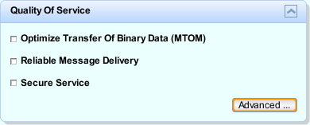
Optimización de mensajes
Cuando hablamos de optimización de mensajes nos referimos a conseguir que los mensajes sean enviados de forma eficiente a través de la red. En los servicios SOAP los mensajes son documentos XML que requieren una gran cantidad de información para cumplir con el estándar. Es decir, no tenemos únicamente los datos que nos interesa comunicar, sino que estos datos se ven envueltos por varias etiquetas XML con información sobre el nombre de la operación, el espacio de nombres en el que se encuentra, las distintas partes del documento SOAP, etc.
Toda esta información transmitida como texto en formato XML podría ser codificada en otros formatos más compactos, para de esta forma ganar eficiencia en su transmisión a través de la red. Esto es precisamente en lo que consiste la optimización de mensajes.
Un caso en el que la transmisión en XML resulta especialmente poco eficiente es en el que tratamos con un volumen elevado de datos binarios. Para poder incluir información binaria en un mensaje de texto debemos utilizar una codificación como base64, que transforme la información binaria a un conjunto de caracteres imprimibles, lo cual produce que este contenido ocupe un espacio considerablemente mayor.
Podemos optimizar el envío de datos binarios mediante MTOM (Message Transmission Optimization Mechanism). Este mecanismo de optimización de mensajes SOAP lo que hará será enviar los datos binarios como un anexo al mensaje, en lugar de enviarlo dentro del mismo texto. De esta forma los datos binarios se pueden enviar en su formato original, sin necesidad de convertirlos a texto.
Utilizar MTOM en servicios desarrollados con Netbeans es sencillo. Simplemente deberemos activar la casilla Optimize Transfer of Binary Data (MTOM) en la sección Quality Of Service dentro de la vista de diseño del servicio web.
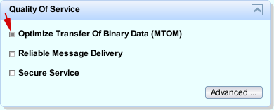
Si entramos en la ventana de características avanzadas de QoS, pulsando sobre el botón Advanced... de dicha sección, veremos dos opciones adicionales relacionadas con la optimización en la transmisión de los datos. Estas opciones son:
- Allow TCP Transport: Permite realizar las comunicaciones con el servicio mediante protocolo TCP, en lugar de utilizar HTTP. Si habilitamos esta casilla, y se conecta un cliente que utilice este protocolo, el servicio lo aceptará.
- Disable Fast Infoset: Fast Infoset es una forma de codificar de forma más compacta un mensaje XML. Por defecto el servicio soportará este formato, a no ser que se active esta casilla para deshabilitarlo. Si no está deshabilitado, el servicio utilizará este formato cuando se conecte un cliente que tenga entre sus tipos de contenido aceptados (cabecera Accept de la petición HTTP) dicho formato.
Fiabilidad en la transmisión de mensajes
Cuando hablamos de fiabilidad en la transmisión de los mensajes nos referimos a asegurarnos de que los mensajes enviados lleguen a su destino. Esto podemos conseguirlo mediante la utilización de la tecnología WS-ReliableMessaging. Esta es otra forma de mejorar la calidad del servicio (QoS).
La invocación de servicios web normalmente se realiza sobre protocolo HTTP (mecanismo petición-respuesta). Si durante la invocación del servicio se produce un error puntual en la red, se pueden presentar múltiples problemas. En primer lugar se producirá un fallo en la llamada. Podemos programar el cliente para que reintente la invocación tras el fallo, pero ¿el fallo ocurrió en la petición (antes de que se llegase a ejecutar la operación en el endpoint), o en la respuesta? Esto supone un problema importante, sobretodo cuando estemos realizando operaciones sensibles que no deban ejecutarse más de una vez (por ejemplo una transferencia a una cuenta bancaria). Si reintentamos la operación desde el cliente tras obtener el fallo, pero en realidad la operación ya se hubiese ejecutado, entonces tendríamos un problema.
Otro caso problemático es el de los servicios unidireccionales (OneWay). En este caso envíamos un mensaje sin esperar respuesta. Por lo tanto no sabremos ni siquiera si el mensaje ha llegado a su destino o no.
Estos problema pueden resolverse mediante el uso de WS-ReliableMessaging. Cuando utilizamos esta tecnología se nos asegura de que los mensajes van a llegar a su destino una, y sólo una vez. Esta tecnología incorpora mecanismos que permiten recuperarse de fallos temporales en las comunicaciones. De forma opcional, también podremos asegurarnos de que los mensajes lleguen a su destino en el mismo orden en el que fueron enviados.
El funcionamiento de este tecnología está inspirado en TCP. Es decir, se crear un canal de comunicaciones entre cliente y servicio, mediante el intercambio de mensajes adicionales utilizados para controlar el flujo de datos.
El inconveniente de utilizar este mecanismo es su mayor coste de procesamiento. Mantener el canal de datos supone un aumento considerable en el número de mensajes enviados. Esto se acentúa todavía más en el caso en el que queramos asegurarnos de que los mensajes llegan en orden a su destino. Por lo tanto, esta última característica deberemos utilizarla sólo cuando sea estrictamente necesaria.
En Netbeans podemos activar la transmisión fiable de mensajes directamente a través de la sección QoS de la vista de diseño del servicio, marcando la casilla Reliable Message Delivery.
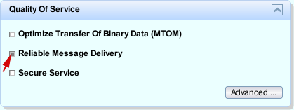
Podemos configurar con mayor detalle la forma en la que se realizará la transmisión fiable entrando en la ventana de características avanzadas de QoS. De esta forma podremos configurar por ejemplo que se asegure que los mensajes lleguen en orden.
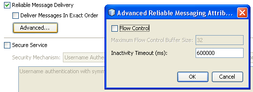
Las opciones que aquí se presentan son:
- Deliver Messager in Exact Order: Nos asegura que los mensajes llegan al destino en el mismo orden en el que fueron enviados. El hacer esto supone un elevado coste adicional en las comunicaciones. Sólo debe utilizarse cuando sea necesario.
- Flow Control: Esta característica funciona de forma conjunta con la siguiente (máximo tamaño de buffer). Si los mensajes deben llegar ordenados, y han llegado algunos mensajes, pero faltan por llegar mensajes anteriores, los mensajes llegados hasta el momento son almacenados en un buffer, a la espera de que lleguen los anteriores para de esta forma poder se entregados a la aplicación en orden. Con esta característica podemos especificar el número máximo de mensajes que pueden ser almacenados a la espera de que lleguen los que faltan para poder entregarlos en orden. Si se rebasa el límite, los siguientes mensajes que lleguen serán ignorados.
- Maximum Flow Control Buffer Size: Número máximo de mensajes que se pueden almacenar en el buffer a la espera de que lleguen los mensajes que faltan de la secuencia. Sólo se utiliza si está activada la característica Flow Control.
- Inactivity Timeout (ms): Si el canal de datos permanece inactivo, éste será cerrado automáticamente transcurrido un tiempo. Esta característica indica el tiempo (en milisegundos) que transcurrirá desde la última actividad realizada hasta que el canal sea cerrado automáticamente (por defecto son 10 minutos).
Aunque acabamos de ver que se define un timeout para que el canal sea cerrado de forma automática si permanece inactivo, dado que el mantener un canal de datos abierto resulta costoso, será recomendable cerrar manualmente el canal cuando no esperemos recibir ni enviar más mensajes a través de él. Podemos cerrar el canal de datos desde el cliente de la siguiente forma:
ConversionSW port = service.getConversioSWPort();
int result = port.euro2ptas(18.95);
out.println("Result: " + result);
((Closeable)port).close();
Servicios web con estado
Una de las características que más se han echado en falta en los primeros años de existencia de los servicios web es la capacidad de mantener un estado. Los servicios web eran servicios sin estado, en los que cada llamada era independiente de las demás, y si queríamos identificar de alguna forma al cliente que estaba realizando la llamada debíamos proporcionar como parámetro un identificador creado por nosotros que nos indicase de qué cliente se trataba. Esta carencia complicaba implementar elementos como por ejemplo un carrito de la compra mediante servicios web, al que pudiesemos añadir productos en sucesivas llamadas.
Para suplir esta carencia se han ideado diferentes técnicas, como por ejemplo el acceder a sesiones HTTP a través del objeto WebServiceContext. También encontramos otro enfoque consistente en aprovechar la tecnología WS-ReliableMessaging para implementar el estado. Cada canal de datos tiene un identificador de sesión único, al que podemos acceder a través de la propiedad com.sun.xml.ws.sessionid del objeto WebServiceContext, y que puede ser utilizado para identificar a cada cliente y de esta forma mantener su estado.
Sin embargo, a partir de JAX-WS 2.1 aparece la tan esperada posibilidad de crear servicios web con estado (stateful). En este caso tendremos una instancia diferente de la clase del servicio para cada cliente. De esta forma, dentro de la clase JWS podremos definir variables de instancia (a diferencia de los servicios stateless, en los que todos los campos debían ser estáticos), y cada cliente accederá a sus datos propios (almacenados en los campos de la instancia concreta a la que esté accediendo).
Estos servicios con estado están basados en la tecnología WS-Addressing. Esta tecnología permite identificar un endpoint de un servicio mediante XML, de forma independiente al protocolo de transporte que se vaya a utilizar para acceder a él. De esta forma se podrá especificar no sólo la dirección del servicio, sino también la instancia concreta a la que deseamos acceder de dicho servicio.
Vamos a ver un ejemplo sencillo de servicio con estado. Para crear un servicio de este tipo deberá estar anotado con @Addressing, para poder identificar desde el cliente la instancia concreta del servicio a la que conectarse, y con @Stateful para marcarlo como servicio web con estado. Al estar marcado de esta forma, el contenedor le inyectará de forma automática un objeto de tipo StatefulWebServiceManager en un campo manager que será público y estático (o bien privado y accesible mediante getters y setters).
@Stateful
@WebService
@Addressing
public class CuentaSW {
private int id;
private int saldo;
public CuentaSW(int id) {
this.id = id;
this.saldo = 0;
}
public void ingresar(int cantidad) {
saldo += cantidad;
}
public int saldo() {
return saldo;
}
public void cerrar() {
manager.unexport(this);
}
public static StatefulWebServiceManager<CuentaSW> manager;
}
Sabemos que cada cliente tendrá acceso a una instancia de este servicio. Pero, ¿cuándo se crea dicha instancia? ¿y quién será el encargado de crearla? No puede hacerse automáticamente cuando desde el cliente llega una petición, ya que no conocemos qué parámetros hay que pasarle al constructor (por esa razón los servicios stateless deben tener un constructor vacío, que es el que utiliza el contenedor para instanciarlos). Por lo tanto, estos servicios con estado deberán ser instanciados desde otros servicios. Por ejemplo, si queremos acceder a nuestra cuenta podemos hacerlo a través de un servicio BancoSW como el siguiente:
@WebService
public class BancoSW {
static Map<Integer, CuentaSW> cuentas = new HashMap();
@WebMethod
public synchronized W3CEndpointReference abrirCuenta(int id) {
CuentaSW c = cuentas.get(id);
if (c == null) {
c = new CuentaSW(id);
cuentas.put(id, c);
}
W3CEndpointReference endpoint = CuentaSW.manager.export(c);
return endpoint;
}
}
Lo único que tiene de especial este servicio es que como resultado nos devuelve un objeto W3CEndpointReference, es decir, una referencia a un endpoint codificada mediante WS-Addressing. El endpoint al que hará referencia será a la instancia del servicio CuentaSW correspondiente a la cuenta solicitada. De esta forma cada cliente podrá acceder a una cuenta diferente, manteniendo cada una de ellas su estado por separado.
Podemos destacar también que la operación export del manager de la cuenta es la que genera la referencia al endpoint. Cuando queramos cerrar la sesión podemos utilizar unexport para que la instancia especificada del servicio deje de estar disponible como servicio web.
Vamos ahora a ver cómo accederemos a este servicio desde el cliente. Para ello lo primero que deberemos hacer es crear en nuestro proyecto cliente los stubs para acceder a los dos servicios creados anteriormente (al igual que hicimos en sesiones anteriores). Una vez hecho esto podremos introducir el código del cliente como se muestra a continuación:
BancoSWService bService = new BancoSWService();
CuentaSWService cService = new CuentaSWService();
BancoSW bPort = bService.getBancoSWPort();
W3CEndpointReference endpoint = bPort.abrirCuenta(1);
CuentaSW c = cService.getPort(endpoint,CuentaSW.class);
c.ingresar(10);
c.ingresar(5);
out.println("Saldo: " + c.saldo());
c.ingresar(20);
out.println("Nuevo saldo: " + c.saldo());
c.cerrar();
Podemos observar que creamos los servicios BancoSW y CuentaSW igual que cualquier otro servicio. El puerto del banco también se obtiene de la misma forma que anteriormente, y a partir de él podemos llamar a la operación abrirCuenta para obtener el endpoint de la cuenta a la que queremos acceder. Ahora es cuando viene la parte diferente, ya que el puerto de la cuenta deberá obtenerse para que acceda al endpoint concreto que nos ha suministrado el banco. Para ello debemos utilizar una versión alternativa del método getPort sobre el servicio CuentaSWService. En esta versión deberemos suministar tanto el endpoint obtenido, como la clase que define el tipo de puerto al que accederemos (CuentaSW). Esta versión de getPort sólo está disponible a partir de JAX-WS 2.1, por lo que con versiones anteriores de la librería no podremos acceder a este tipo de servicios.
Servicios web seguros
Antes de empezar, vamos a recordar una serie de conceptos necesarios para entender los distintos mecanismos para dotar de seguridad a los servicios web.
- Cifrado con clave simétrica: Se utiliza una misma clave para cifrar y descifrar los datos. En este caso esa clave debe ser conocida por los dos extremos de la comunicación.
- Cifrado con clave asimétrica: Se tienen dos claves, una pública y otra privada. La clave pública puede ser difundida, pero la privada nunca se le comunicará a nadie. Lo que se cifra con la clave pública, sólo puede ser discifrado con la privada, y viceversa. Por lo tanto, si queremos que los datos que nos envíen vengan cifrados, deberemos proporcionar nuestra clave pública al otro extremo de la comunicación, el emisor en este caso, que utilizará la clave para cifrar los datos y enviárnoslos. Nosotros podremos descifrarlos con nuestra clave privada, que nunca habremos entregado a nadie.
- Huella digital: Consiste en un código de una determinada longitud (por ejemplo 128bits) generado a partir de un documento mediante un algoritmo conocido como digest, como por ejemplo MD5 o SHA. Dos documentos exactos tendrán la misma huella, pero cualquier pequeño cambio que se produzca alterará fuertemente dicha huella. Una misma huella podría corresponder a varios documentos diferentes.
- Firma digital: Consiste en cifrar la huella de los datos que estamos envíando mediante nuestra clave privada. El receptor de dicho documento podrá recuperar la huella descifrándola mediante nuestra clave pública, pero nunca podrá generar una nueva firma ya que no cuenta con nuestra clave privada. Una vez descifrada la huella, podrá generar la huella de los datos recibidos y comprobar si coincide con la que le envíamos. Esto le garantizará que los datos no hayan sido modificados por nadie más a parte de nosotros, ya que somos los únicos que tenemos en nuestro poder la clave privada necesaria para firmarlos.
- Certificado digital: Un certificado digital relaciona una clave pública con una determinada entidad. Es un documento en el que figuran los datos de la entidad y su clave pública (necesaria para poder validar los datos recibidos de dicha entidad, o para enviarle información propia cifrada). Además, dicho certificado habrá sido emitido por una Autoridad Certificadora (CA), y estará firmado por ella, para así poder confiar en su autenticidad. El protocolo más utilizado para certificar es el X.509.
- Certificado raíz: Son los certificados correspondientes a las CAs, que contienen la clave pública necesaria para validar los certificados emitidos por ellas. Son un caso especial de certificados, ya que representan a la misma entidad que los ha emitido, por lo que no hay forma de validarlos, estos certificados se presuponen válidos. Suelen venir ya instalados en las aplicaciones o dispositivos que utilizamos para conectarnos, como son los navegadores web o dispositivos móviles.
Cuando hablamos de seguridad en el intercambio de información encontramos tres aspectos que debemos diferenciar:
- Confidencialidad: Se trata de evitar que la información privada pueda ser vista por personas no autorizadas. Esto se resuelve mediante el cifrado de los datos (con clave simétrica o asimétrica).
- Integridad: Se trata de evitar que los datos sean alterados indebidamente. Esto se resuelve mediante el uso de una huella digital. Normalmente esta huella se encuentra cifrada mediante la clave privada de quien envió estos datos, dando lugar a lo que se conoce como firma digital.
- Autentificación: Se trata de verificar la identidad del otro extremo. Para autentificar a los usuarios normalmente basta con que proporcionen login y password. Si se requiere un mayor nivel de seguridad, se puede proporcionar al usuario un certificado firmado digitalmente (como por ejemplo los certificados extendidos por la FNMT que nos permiten acceder a servicios para presentar la declaración de la renta). Para autentificar a los sitios web (por ejemplo, cuando accedemos a nuestro banco, saber que realmente nos estamos comunicando con él), también se utilizará la firma digital (la información que nos proporcione el servidor vendrá firmada por un certificado de su propiedad).
En el caso de los servicios web debemos tener también en cuenta que estamos permitiendo invocar procedimientos remotos mediante protocolo HTTP, que en un principio fue diseñado para la extracción de documentos. Por lo tanto, sus puertos no suelen ser cortados por ningún firewall, de forma cualquiera podrá utilizar estos servicios libremente, sin que los firewalls puedan controlarlo. Esto también podría suponer un problema de seguridad en la red si no tenemos cuidado.
Confidencialidad e integridad
Cuando un cliente utiliza un Servicio Web, deberá enviarle un mensaje a este servicio a través de la red, y el servicio le responderá mediante otro mensaje. Estos mensajes contendrán información que puede ser confidencial. En los casos en los que estemos transmitiendo información sensible en la invocación al servicio, deberemos contar con métodos para cifrar estos datos.
Dado que estos mensajes se envían mediante protocolo HTTP, al igual que en el caso de las aplicaciones web podrán ser encriptados mediante SSL (HTTPS), evitando de esta forma que puedan ser leídos o modificados por un tercero. El protocolo SSL en líneas generales consiste en los siguientes pasos:
- El cliente negocia con el servidor una clave simétrica para cifrar la información (handshake). Esta negociación se hace utilizando la clave pública del certificado del servidor (el cliente obtiene la clave pública del certificado del servidor, genera una clave simétrica para la sesión, y se la envía cifrada al servidor mediante su clave pública). De forma opcional, el cliente podría autentificarse mediante su propio certificado si fuese necesario.
- Cliente y servidor intercambian la información cifrándola y firmandola mediante la clave simétrica acordada. De esta manera dicho protocolo nos proporciona confidencialidad e integridad en las comunicaciones.
Sin embargo, en aplicaciones en las que el mensaje deba atravesar una cadena de nodos intermedios, este mensaje deberá desencriptarse y volverse a encriptar entero en cada uno de estos servicios, por lo que los datos estarán inseguros dentro de cada nodo. Es decir, SSL nos proporciona seguridad a nivel de transporte, pero una vez el mensaje haya llegado a un nodo se descodificará completamente, quedando así expuesto en su totalidad. Esto nos puede plantear un problema cuando el mensaje contenga información destinada a diferentes servicios, y no queramos que desde uno de ellos se pueda acceder a información dirigida a los demás.
Este problema se puede solucionar cifrando por separado cada elemento del mensaje, y permitiendo que se cada nodo descifre sólo la parte del mensaje que le atañe, pero que no pueda acceder al resto de elementos del mensaje que no le conciernen. Esto es lo que se conoce como seguridad a nivel de mensaje.
Por lo tanto, encontramos dos formas para cifrar y firmar la información intercambiada en la invocación del servicio:
| Seguridad a nivel de transporte | Seguridad a nivel de mensaje |
|---|---|
| Se implementa mediante SSL. | Basada en la especificación WS-Security. |
| Es dependiente del protocolo de transporte. | Es independiente del protocolo de transporte utilizado. |
| Resulta más eficiente. | Tiene un mayor coste. |
| Se puede aplicar a cualquier servicio accesible mediante HTTP. | Requiere que los actores soporten WS-Security. |
| Se protege el mensaje HTTP completo sólo en su transmisión por la red. | Se protegen partes determinadas del mensaje hasta su llegada al endpoint. |
| Si el cliente debe autentificarse mediante un certificado, sólo podrá hacerlo ante el primer intermediario. | La autentificación del cliente valdrá para todos los destinatarios. |
| No plantea problemas cuando tengamos una conexión punto-a-punto. | No plantea problemas ni aunque haya intermediarios. |
Autentificación
Puede que necesitemos identificar a un usuario para prestarle un determinado servicio, o bien para saber si tiene autorización para acceder a dicho servicio.
Para identificar al usuario podemos simplemente solicitar un login y password. En general, lo que haremos será proporcionar al servicio un token con el que se identificará al cliente. Encontramos los siguientes tipos de tokens:
- Username token: Consiste en un login y un password.
- SAML token: Un token SAML (Security Assertion Markup Language) está basado en XML y nos permitirá intercambiar información de autentificación y autorización.
- X.509 token: Se autentifica al cliente mediante un certificado digital de su propiedad.
Al aplicar la autentificación a servicios web, al igual que en el caso anterior, también encontramos un problema. Si necesitamos invocar un conjunto de servicios, deberemos autentificarnos por separado para cada uno de ellos, ya que pueden estar distribuidos en distintos servidores a través de Internet. Para solucionar este problema, deberíamos contar con un contexto compartido global (gestor de identidades) de donde cualquier servicio pudiese obtener esta información de autentificación, y de esta manera no tener que autentificarse por separado con cada servicio individual. Esto es lo que se conoce como Single Sign On (SSO).
Tanto Microsoft Passport como Liberty Project (formado por una alianza de empresas entre las que se encuentra Sun) pretenden dar solución a este problema, proporcionando un servicio de autentificación centralizado. De esta forma podremos acceder a diferentes servicios utilizando siempre el mismo login, ya que todos podrían utilizar el mismo servidor de identidades para autentificarnos.
Para implementar SSO podemos utilizar los tokens SAML. Para acceder a un servicio lo que haremos será:
- Acceder a un proveedor de identidades proporcionando nuestros credenciales.
- El proveedor de identidades envía al cliente un aserto SAML con la información de autentificación y autorización.
- El cliente podrá utilizar el aserto SAML para acceder al servicio.
Glassfish nos permite instalar como añadido opcional Sun Java System Access Manager, un gestor de identidades con el que podremos implementar SSO. Hemos de destacar que SSO es tanto aplicable a servicios web como a aplicaciones web. En este último caso los mensajes SAML se suelen pasar como campos ocultos en formularios HTML, haciendo redirecciones entre el proveedor de identidades y el proveedor del servicio.
También podemos proporcionar asertos SAML mediante un Security Token Service (STS). Un STS es un servicio web que nos proporciona un token de seguridad. De esta forma puede proporcionar tokens SAML que podamos utilizar para autentificarnos. Nuestro cliente accederá al STS para obtener un token de seguridad, y utilizará dicho token para conectarse al servicio.
Configurar la seguridad en Netbeans
Para poder utilizar servicios web seguros, lo primero que necesitaremos hacer es instalar en Glassfish los certificados necesarios (certificados X.509 version 3). Estos certificados, y las instrucciones para actualizarlos en Glassfish, pueden encontrarse en la siguiente dirección:
http://docs.sun.com/app/docs/doc/820-1072/6ncp48v4k?a=view#gfrgz
Para algunos tipos de seguridad, también será necesario crear un usuario un Glassfish con el que los clientes puedan autentificarse. El usuario que utilizarán por defecto los clientes de servicios tiene login "wsitUser" y password "changeit". El usuario deberá crearse dentro del realm file, y pertenecerá al grupo wsit. Podemos añadir este usuario desde la consola de administración de Glassfish, entrando en la sección Configuration > Security > Realms > file, y dentro de ella pulsando el botón Manage Users. En esta pantalla de gestión de usuarios, pulsaremos el botón New ... para crear el usuario proporcionando los datos anteriormente citados, y tras ello veremos dicho usuario en la lista:
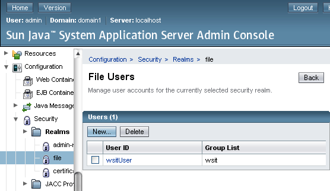
Configurar la seguridad en el servicio
Una vez tenemos configurado Glassfish, vamos a ver ahora como añadir seguridad a uno de nuestros servicios web mediante Netbeans. La forma más inmediata de hacer esto es simplemente pulsando sobre la opción Secure Service de la sección QoS de la vista de diseño del servicio.
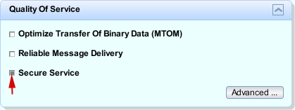
Con esto habremos añadido seguridad a nivel de mensaje mediante el uso de certificados X.509. Pero antes de seguir vamos a ver más a fondo las opciones avanzadas que nos ofrece Netbeans para configurar la seguridad de nuestros servicios. Para ello entramos en la ventana de opciones avanzadas de QoS, pulsando el botón Advanced ... de dicha sección:
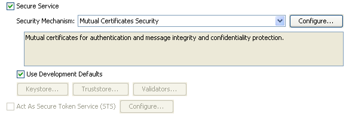
En primer lugar vemos que nos permite elegir el mecanismo de seguridad. Los tipos básicos que encontramos son:
- Username Authentication with Symmetric Keys: Seguridad a nivel de mensaje. El cliente se identifica simplemente mediante login y password (por defecto wsitUser/changeit), y en tiempo de ejecución se genera una clave simétrica que es cifrada mediante el certificado del servicio.
- Mutual Certificates Security: Seguridad a nivel de mensaje. En este caso el cliente se autentifica mediante un certificado X.509, por lo que tanto cliente como servicio deberán tener sus propios certificados.
- Transport Security (SSL): Seguridad a nivel de transporte mediante SSL. Si activamos esta opción, se añadirá automáticamente una restricción de seguridad al descriptor de despliegue (web.xml) en la que se protege la URL asociada al servicio mediante seguridad declarativa. Es decir, la seguridad se implementa como en una aplicación web.
Dentro del resto de opciones encontramos alguna basadas también en seguridad a nivel de transporte (Message Authentication over SSL y SAML Authorization over SSL), en las que dentro del mensaje se ajunta un token de seguridad (SAML o de otros tipos). Encontramos también opciones para utilizar tokens de autorización SAML utilizando seguridad de nivel de mensaje (SAML Sender Vouches with Certificates y SAML Holder of Key), y también para utilizar tokens de seguridad emitidos por un servicio de tipo STS (que podremos crear mediante Netbeans, creando un nuevo proyecto, y como tipo seleccionando Web Services > Secure Token Service).
Por defecto observamos además que tenemos marcada la casilla Use Development Defaults. Durante el desarrollo la podemos dejar marcada para no tener que preocuparnos de configurar los certificados. Si la desmarcamos, según el tipo de servicio, deberemos seleccionar los certificados que se van a utilizar. Tenemos dos almacenes de certificados:
- Keystore: Certificados X.509 propios. De cada uno se almacena el certificado y la clave privada asociada.
- Truststore: Certificados raíz. Son los certificados en los que confiamos.
Además, en la parte inferior de la ventana de características avanzadas podemos especificar la configuración para cada mensaje concreto utilizado en el servicio:
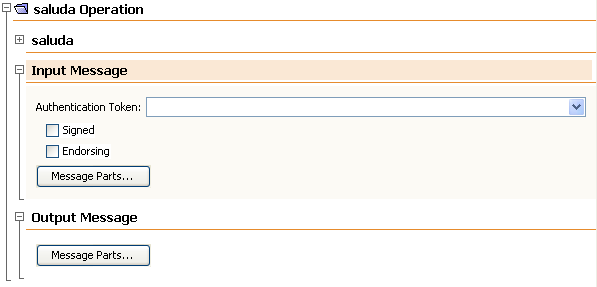
Pulsando sobre el botón Message Parts ... podremos configurar qué partes del mensaje queremos cifrar y cuales queremos firmar. Aquellas que sólo estén firmadas podrán ser vistas por cualquiera, pero no alteradas (se protege su integridad), mientras que las que estén cifradas tampoco podrán ser leídas sin permiso (se protege su confidencialidad). Como es evidente, está opción sólo está disponible cuando se usa seguridad a nivel de mensaje.
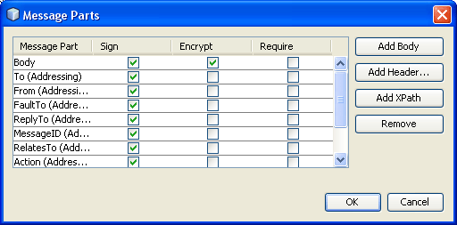
Dejaremos la configuración de seguridad por defecto (Mutual Certificates Security), y pasamos a ver cómo crear el cliente del servicio seguro.
Configurar la seguridad en el cliente
Los servicios web seguros no podrán ser ejecutados por el cliente de prueba, por lo que deberemos desarrollar nuestro propio cliente. Además, estos servicios deben invocarse desde un contenedor capaz de gestionar la seguridad. Es decir, dentro de servlets, EJBs, u otros servicios web. Por lo tanto, lo primero que haremos será crear un proyecto web, y dentro de él generaremos el cliente (Web Service Client) para acceder al servicio creado en la sección anterior, de la misma forma en la que crearíamos cualquier otro cliente para acceder a un servicio web. Para crearlo podemos o bien especificar la dirección de su documento WSDL, o directamente especificar el proyecto en el que se encuentra definido el servicio al que queremos acceder.
Dado que la especificación de seguridad del servicio se encuentra en su documento WSDL, al generarse el cliente se habrá configurado de forma automática para utilizar el mecanismo de seguridad especificado en el servicio. De esta forma, podremos acceder a la configuración de seguridad del cliente pulsando con el botón derecho sobre la referencia al servicio y seleccionando la opción Edit Web Service Attributes:
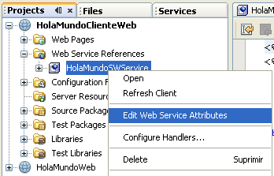
Como en el servidor estamos utilizando los valores de configuración por defecto para el desarrollo, en el cliente podemos hacer lo mismo, marcando la casilla Use development defaults. Si no fuese así, deberíamos especificar la configuración necesaria (certificado de usuario, certificados de confianza, nombre de usuario y password, etc).
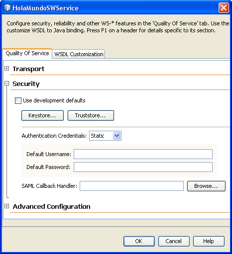
Una vez configurada la seguridad, añadiremos el código del cliente para invocar el servicio a algún componente de la aplicación (por ejemplo a un Servlet), al igual que haríamos para invocar cualquier otro servicio.
Transacciones atómicas
Para implementar transacciones en servicios web no necesitaremos nuevas APIs, sino que utilizaremos la API de transacciones Java Transaction API (JTA). Podremos definir para cada operación del servicio la forma en la que tratará las transacciones.
El significado de cada uno de estos modos es:
| Modo | Si el cliente se encuentra dentro de una transacción ... | Si el cliente no se encuentra dentro de ninguna transacción ... |
|---|---|---|
| Required | ... la operación de ejecuta en dicha transacción. | ... se crea una nueva transacción antes de ejecutar la operación. |
| Requires New | ... ésta se suspende y se inicia una nueva dentro de la cual se ejecutará la operación. Una vez la operación se ha ejecutado, se reanuda la transacción anterior. | ... se crea una nueva antes de ejecutar la operación. |
| Supported | ... la operación se ejecuta dentro de ella. | ... la operación se ejecuta sin estar dentro de ninguna transacción. |
| Not Supported | ... ésta se suspende antes de ejecutar la operación. Una vez ejecutada, se reanuda la transacción anterior. | ... se ejecuta sin crear ninguna transacción. |
| Mandatory | ... la operación se ejecuta dentro de dicha transacción. | ... el contenedor lanza una excepción TransactionRequired Exception. |
Esto lo configuraremos en la ventana de características avanzadas de QoS. Se especificará una configuración para cada operación del servicio.
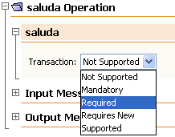
El cliente podrá ser algún componente de la capa web o un EJB. En ellos podremos utilizar un objeto UserTransaction para gestionar la transacción.
public class ServletCliente extends HttpServlet {
@WebServiceRef(wsdlLocation =
"http://localhost:8080/Hotel/ServicioHotel?wsdl")
private es.ua.jtech.servcweb.wsat.HotelSWService sHotel;
@WebServiceRef(wsdlLocation =
"http://localhost:8080/Vuelos/ServicioVuelos?wsdl")
private es.ua.jtech.servcweb.wsat.VuelosSWService sVuelos;
@Resource UserTransaction ut;
protected void processRequest(HttpServletRequest request,
HttpServletResponse response)
throws ServletException, IOException {
try {
HotelSW pHotel = sHotel.getHotelSW();
VuelosSW pVuelos = sVuelos.getVuelosSW();
ut.begin();
boolean hotelReservado =
pHotel.reservaHabitacion(datosHabitacion);
boolean vueloReservado =
pVuelos.reservaVuelo(datosVuelo);
if(!hotelReservado || !vueloReservado) {
ut.rollback();
} else {
ut.commit();
}
} catch(Exception e) {
try {
ut.rollback();
} catch (Exception e) { ... }
}
}
}